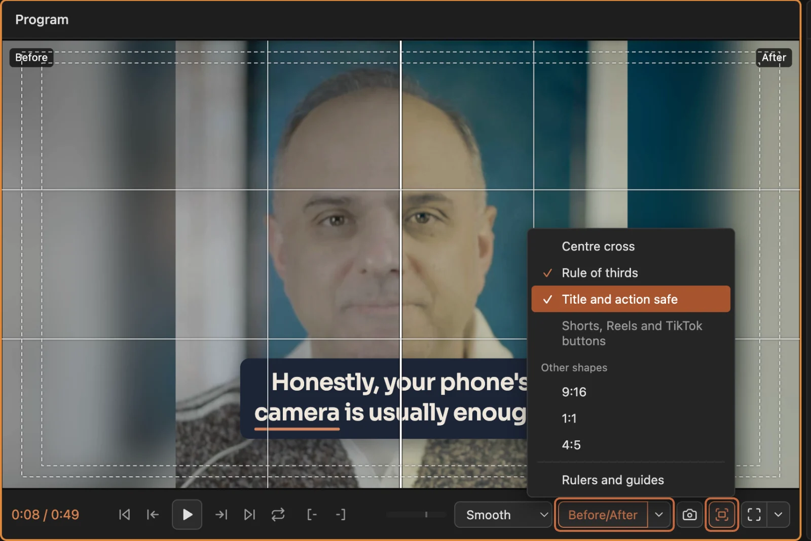
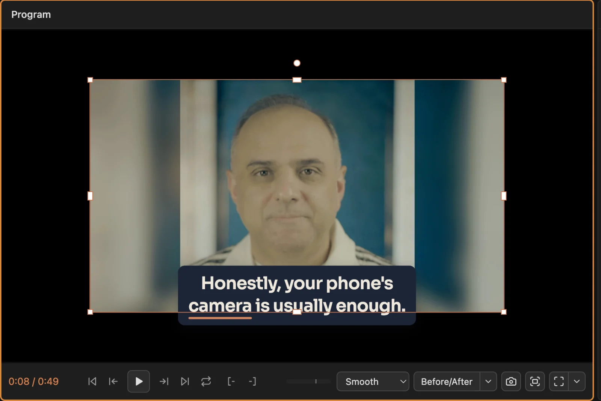

Program (viewer)
Program shows the cut as it will be exported. Its bar holds playback, the view tools and full screen; the picture itself can be moved, resized and cropped by hand.

Play
Space plays and pauses. The buttons, from the left: the time, Go to start, Previous edit point, play, Next edit point, Go to end, loop, and In and Out. J, K and L play backwards, stop and play forwards; I and O set In and Out.
Playback quality: Smooth plays a phone's 4K and HEVC videos from a light copy; Full quality plays the file itself, for fast computers. The export is always full quality.
Overlays
The Overlays button shows lines and frames that help you place things. They are never in the export.
- Centre cross and Rule of thirds.
- Title and action safe: where text is safe on every screen.
- Shorts, Reels and TikTok buttons: where those apps put their buttons over a vertical video.
- Other shapes (9:16, 1:1, 4:5): where a vertical or square copy would crop, following the person.
- Rulers and guides: drag from a ruler to add a guide line, drag it back to remove it.
⌘ ' (Ctrl ') hides or shows them all.
Before and After
Before/After shows the picture without your colour work. Its menu has Before, After, Split view (both side by side, split by a line) and Off. Clips over the recording, such as titles, show as they are.
Move, resize and crop in the picture
Click the picture to pick the clip under the pointer. Then:
- drag it to move it;
- drag a corner to resize it;
- drag an edge to crop it;
- drag the circle above it to turn it.
It snaps into place as you drag; hold Alt to drag freely, Shift to keep the centre. On a title or a graphic the edges resize it too, keeping its shape, and Alt crops it. The Clip tab sets exact numbers.

Full screen and a second screen
The full screen button shows the viewer alone on the screen (Viewer Full Screen, ⇧ ⌘ F); Esc leaves. Its menu offers Picture on the other screen when a second screen is connected.
Export a frame
The camera button saves the frame at the playhead as a picture (Export Frame, ⇧ ⌘ E).